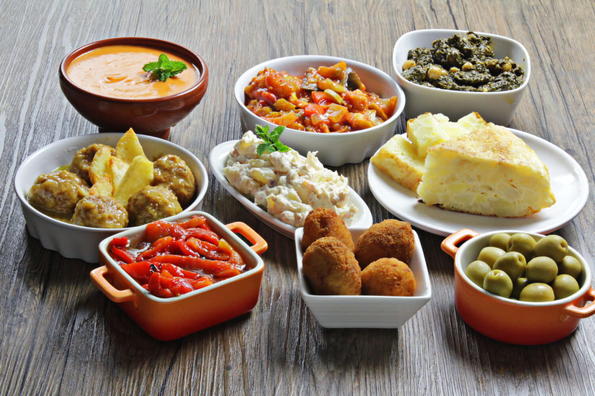
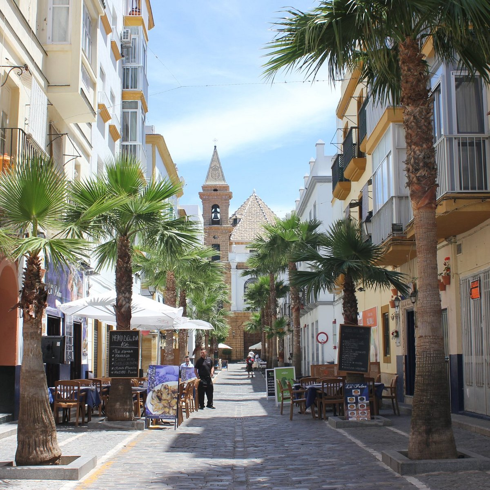

Últimas noticias

Ruta de Tapas en Sevilla: Descubre los Sabores del Sur
Sevilla se prepara para acoger su tradicional "Ruta de Tapas", donde más de 50 bares y restaurantes ofrecerán lo mejor de la gastronomía andaluza. Delicias como el salmorejo, las croquetas de jamón ibérico y el pescaíto frito serán los protagonistas de este evento que atrae tanto a locales como a turistas.

GoSur Cádiz: La Nueva Joya Gastronómica del Barrio de La Viña
El novedoso restaurante GoSur abre sus puertas en Cádiz, en pleno corazón del barrio de La Viña. Ubicado en C. Corralón de los Carros, 57, GoSur Cádiz ofrecerá una experiencia única basada en la fusión de la cocina andaluza con un toque contemporáneo, prometiendo convertirse en un referente para los amantes de la buena mesa en la ciudad.